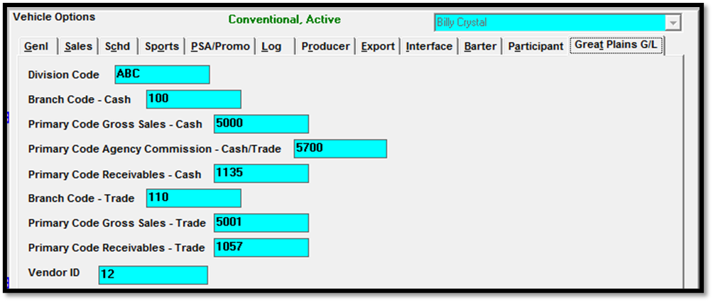
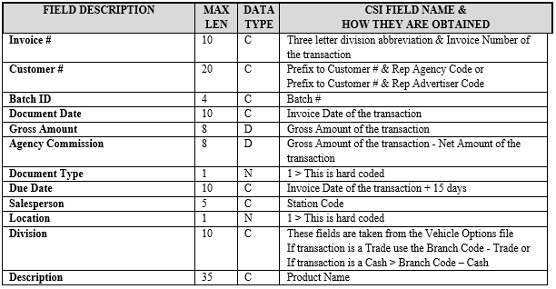
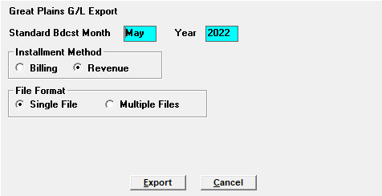

Great Plains
The Great Plains export creates two accounts receivables files to import into the Great Plains database. The standard broadcast export is created from the cash and trade invoice transactions. The export creates two files: ARINV.CSV and the ARBODY.CSV in the Export folder defined in the traffic.ini (typically csi\prod\export). The gross, net and commission for each invoice transaction is exported.
Setup
Site Options
Options
Check the “Great Plains G/L” checkbox in the Site Options -> Options tab.
Export
Using G/L Codes: should be checked. This turns on the input field for the advertiser/agencies where the client code number will be stored. (On version 7.0 and earlier, this is labeled “Using Rep Codes”.)
Batch Number: is the next batch number to use. Counterpoint recommends making it higher than all previous batch numbers used in Great Plains. Counterpoint will automatically increment the batch numbers.
Customer Number Prefix: the required alpha-numeric code representing a prefix to the customer #. This prefix and the payee’s auto assigned number (Rep Agency Code or Rep Advertiser Code) are combined and stored in the G/L Invoice summary export file.
Next Customer Number to Assign: Make this number higher than all previous client #s used
Advertisers and Agencies
When a new advertiser or agency is added, enter the Counterpoint advertiser/agency rep code in the Advertiser and Agency Screens. This is the code defined for them in Great Plains. You will receive a warning message if left blank.
Sports Multimedia
When new Multimedia items are created, define the G/L Cash and G/L Trade codes if they are different from the vehicle codes.
- Select Programming
- Select the Vehicle
- Select the Library and Define Schedule
- Select the MultiMedia button
- Select Inventory Types
- Enter the G/L Cash and G/L Trade codes
New Vehicles
When new Vehicles are added, define the GL Codes in the Vehicles -> Options -> Great Plains G/L Screen.

Description of Fields
- Division Code – This is a prefix to the Invoice # that is stored in the G/L ARINV.CSV and ARBODY.CSV.
- Branch Code - Cash – The branch code is appended to the Primary code and store in ARBODY.CSV.
- Branch Code - Trade – The branch code is appended to the Primary code and store in ARBODY.CSV.
- Primary Code Gross Sales - Cash – The primary code is a prefix to the branch code and stored in ARBODY.CSV.
- Primary Code Agency Commission - Cash – The primary code is a prefix to the branch code and stored in ARBODY.CSV.
- Primary Code Receivables - Cash – The primary code is a prefix to the branch code and stored in ARBODY.CSV.
- Primary Code Gross Sales - Trade – The primary code is a prefix to the branch code and stored in ARBODY.CSV.
- Primary Code Receivables - Trade – The primary code is a prefix to the branch code and stored in ARBODY.CSV.
Note: the Vendor ID is used by the Barter Payments Export, not this Great Plains export.
Running the Export
At the end of the month, after reconciling the month, you will need to generate the Great Plains export and then import the files created by the export into the Great Plains database.
To access the export, on the Traffic system, select Task -> Export -> Great Plains G/L.
When Installment Billing is enabled in Traffic Site Options, an option will appear on the Great Plains export screen labeled "Installment Method" that has two choices: “Billing” and “Revenue”. The default choice is “Billing”. By choosing “Billing”, installment revenue will be reported as billed. For example, if the flight goes for twelve months, but it is billed upfront in January, all of the revenue will be reported in January. The other option is "Revenue". When this is selected, the revenue will be reported as aired. For example, if the flight goes for twelve months, but it is billed upfront in January, the revenue will be reported across the twelve month span, as the spots air. Choose the method you want to use when generating the export. (If installment billing is not enabled in Traffic Site Options, then these options will not appear as they only apply to contracts with installment billing.)
To generate the export file, enter the month and year to export. If installment billing is enabled, choose the installment method to use. Then press the Export button to run the export. When it finishes running, the two export files can be retrieved from the CSI\Prod\Export folder.
Viewing the Export
Information about the export (including the date and time run and where the files were created) is stored in the CS\data\messages directory. You can see this information by viewing the Export -> Great Plains message, in the Accessories -> Messages -> Viewer screen.
File Information
Below are two tables describing the fields, positions, and lengths, along with the data type of each field. The ARINV.CSV file contains one record per invoice transaction and specific information about that transaction. The ARBODY.CSV file contains three records per transaction (gross, net and commission).
ARINV.CSV

ARBODY.CSV
|
FIELD DESCRIPTION |
MAX LEN |
DATA TYPE |
CSI FIELD NAME & HOW THEY ARE OBTAINED |
|
Invoice # |
10 |
C |
Three letter division abbreviation & Invoice Number of the transaction |
|
Amount |
8 |
C |
Record 1 > Gross Amount of the transaction (always negative) Record 2 > Net Amount of the transaction Record 3 > Gross Amount - Net Amount |
|
Code |
20 |
D |
These fields are taken from the Vehicle Options file Example = "1-100-4000-" The 1 is hard coded Record 1 > If transaction is a Trade > 1- & Branch Code - Trade & Primary Code Gross Sales - Trade or If transaction is a Cash > 1- & Branch Code – Cash & Primary Code Gross Sales - Cash Record 2 > If transaction is a Trade > 1- & Branch Code - Trade & Primary Code Receivables - Trade or If transaction is a Cash > 1- & Branch Code – Cash & Primary Code Receivables - Cash Record 3 > If Gross Amount of the transaction - Net Amount of the transaction = 0 then NULL If transaction is a Trade > NULL or If transaction is a Cash > 1- & Branch Code – Cash & Primary Code Agency Commission - Cash |
|
Type |
2 |
N |
These are hard coded Record 1 > 9 Record 2 > 3 Record 3 > 10 |
Single File Format
On version 8.1 and above, when running the export, it's possible to choose whether to generate the multiple file format, or generate a single file, by selecting the corresponding radio button as shown in the picture below.

Single file field description
Customer number: this is the same value from ARINV.csv column 2.
Document number: the same value from ARINV.csv column 1.
Document description: the same value from ARINV.csv column 12.
Document date: the same value from ARINV.csv column 4.
Sales person ID: this is a new field. It uses the slfCode, which is a unique Counterpoint-assigned ID number that gets assigned to each salesperson entered in the system.
Amount: the same value from ARBODY.csv column 2.
GL Account: the same value from ARBODY column 3.
The name of the single file is: GPExport-[mmddyyyy].csv, with the "mmddyyyy" date being the date the export is generated.